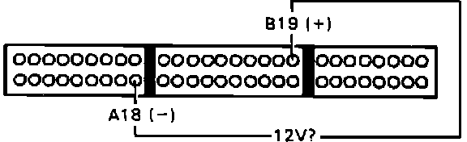

Power Steering Pressure Switch: Testing and Inspection
Power Steering Pressure Switch Testing:

1. Install test harness between ECU and harness connector. If test harness is not available, carefully backprobe wires at ECU connector.
2. Start engine and check for voltage between ECU terminals B19 and A18.
Battery voltage, proceed to next step.
No battery voltage, proceed to step 7.
3. Disconnect 2 wire connector from power steering pressure switch at the rear of the engine compartment.
4. Connect RED and BLK harness terminals together with a test wire.
5. Recheck voltage across ECU terminals B19 and A18.
Battery voltage, proceed to next step.
Not battery voltage, replace P/S pressure switch. End of test.
6. Repair open RED wire between ECU terminal B19 and P/S pressure switch or BLK wire between P/S pressure switch and ground. End of test.
7. Check voltage across terminals B19 and A18 while turning steering wheel.
Battery voltage, proceed to next step.
No battery voltage, proceed to step 9.
8. Power steering pressure switch functioning normally, no further testing required.
9. Turn ignition off.
10. Disconnect test harness connector B from main harness, leave connected to ECU.
11. Turn ignition on and check for voltage across terminals B19 and A18.
Battery voltage, proceed to next step.
No battery voltage, replace electronic control unit. End of test.
12. Reconnect test harness connector B to main harness.
13. Disconnect 2 wire connector from power steering pressure switch at the rear of the engine compartment.
14. Turn ignition on and check for voltage across terminals B19 and A18.
Battery voltage, replace power steering pressure switch. End of test.
No battery voltage, proceed to next step.
15. Repair shorted RED wire between ECU terminal B19 and power steering pressure switch.